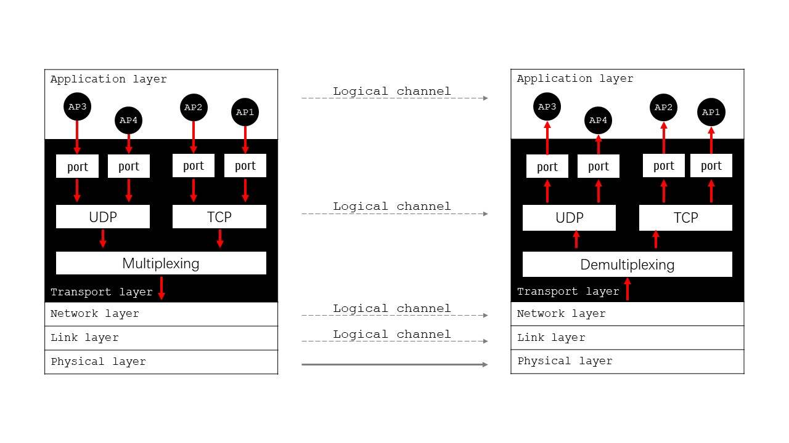

运输层 Transport Layer
- 概述 Overview
- OSI七层模型中的第4层
- 为应用进程提供端到端的逻辑通信服务
- 采用 端口 来标识不同的应用进程，实现进程间的准确通信
- 服务类型Service
- 面向连接的 TCP
Transmission Control Protocol
传输控制协议
- 无连接的 UDP
User Datagram Protocol
用户数据报协议
- 职责 Responsibility
- 运输层作为网络体系结构中的关键层，为上层应用屏蔽了底层网络的复杂性，提供了灵活可靠的数据传输服务
- 复用与分用
复用：多个应用层进程可同时使用运输层服务
分用：运输层能正确将数据交付给对应的应用进程
- 差错检测
通过校验和检测传输错误
TCP还提供差错纠正机制
- 流量控制
控制发送方发送速率，防止接收方缓冲区溢出
- 拥塞控制
防止网络拥塞，提高网络利用率
- 端口 Port
- 含义：端口是一种软件地址，用于标识同一台主机上的不同应用程序进程
- 作用域：只具有本地意义，即只在本机上区分不同的应用程序
- 长度：16bit：0-65535
- 为什么 OSPF 没有分配端口？
- 源端口号和目标端口号
- 每个TCP/UDP数据段都包含源端口号和目标端口号
- 目标端口号用来标识接收方主机上的 特定 服务
- 源端口号用于标识发送方的应用程序，以便接收方能正确回应
- 数据总是从源端口流向目标端口
- 端口状态
- LISTENING：等待连接请求
- ESTABLISHED：连接已建立
- CLOSED：端口未开放或连接已关闭
- 端口安全注意事项
- 不要随意开启不必要的端口
- 定期检查开放的端口和服务
- 使用防火墙限制端口访问权限
- 注意端口扫描攻击防护
- 当用户在浏览器中访问/请求一个网站时
源端口: 客户端(用户的电脑)随机选择一个临时端口，如 50123
目标端口: Web服务器的标准HTTP端口 80
数据流向: 用户电脑(端口50123) → Web服务器(端口80)
- 当Web服务器返回响应时
源端口: Web服务器的HTTP端口 80
目标端口: 用户电脑之前使用的临时端口 50123
数据流向: Web服务器(端口80) → 用户电脑(端口50123)
- 源端口: 邮件客户端使用的临时端口，如 51001
- 目标端口: 邮件服务器的SMTP端口 25
- 数据流向: 用户电脑(端口51001) → 邮件服务器(端口25)
- 命令通道:
源端口: 客户端命令端口，如 52001
目标端口: FTP服务器命令端口 21
- 数据通道:
源端口: FTP服务器数据端口 20
目标端口: 客户端数据端口，如 52002
- 为什么 FTP 区分命令和数据通道？
- 工作机制总结
- 客户端发起连接
客户端选择一个临时端口(49152-65535范围内)作为源端口
客户端指定服务器的熟知端口(0-1023)作为目标端口
- 服务器响应
服务器使用其熟知端口作为源端口
服务器使用客户端的临时端口作为目标端口
运输层以下各层的任务：解决主机到主机的通信
计算机通信实际上应用进程之间的通信

| type | range |
|---|---|
| Well-known Ports | 熟知端口
分配给常用重要服务 0-1023 |
| Registered Ports | 登记端口
为没有熟知端口的应用程序使用，需在IANA登记 1024-49151 |
| Ephemeral Ports | 客户端使用端口
临时端口，客户端程序随机选择使用 49152-65535 |
| protocol | port |
|---|---|
| FTP | 20 / 21 |
| SSH | 22 |
| Telnet | 23 |
| SMTP | 25 |
| DNS | 53 |
| HTTP | 80 |
| HTTPS | 443 |
| POP3 | 110 |
| RIP | 520 |
| DHCP | 67 / 68 |
| MySQL | 3306 |
| Redis | 6379 |
| MongoDB | 27017 |
| PostgreSQL | 5432 |
[] 访问网页 HTTP
[] 发送邮件 SMTP
[] 文件传输 FTP
Drill
- 配置WEB服务器：配置IP地址192.168.0.3
- 配置DNS服务器：配置IP地址192.168.0.2；添加WEB服务器对应的域名信息
- 配置IP地址192.168.0.1；添加DNS服务器地址
- 测试网络连通性
- 主机到WEB服务器的PING；[请补充测试结果]
- 主机到DNS服务器的PING；[请补充测试结果]
- 实时测试
- 打开主机的WEB浏览器；输入www.cnplaman.com，可以看到返回的WEB页面
- 模拟测试
- 筛选协议
- 打开主机的WEB浏览器；输入www.cnplaman.com，单步测试数据报的发送过程；主要查看端口


作业 Homework
- 熟知端口分别有哪些？
- 根据实操部分的内容，完成端口的测试
- 以纸质的形式提交实验报告
- 论文格式请参照范文[点击下载]。